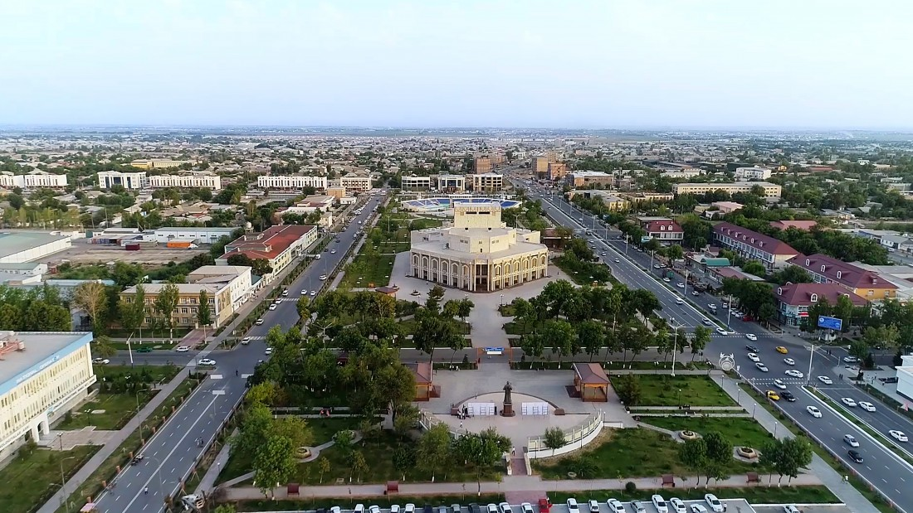
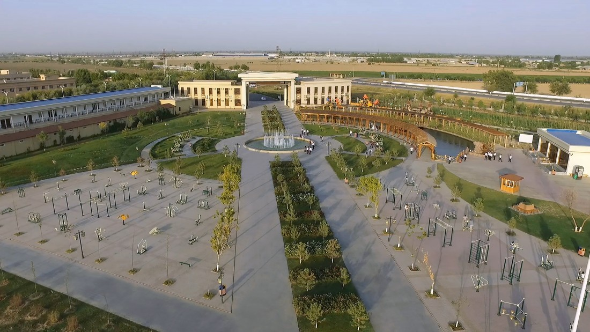
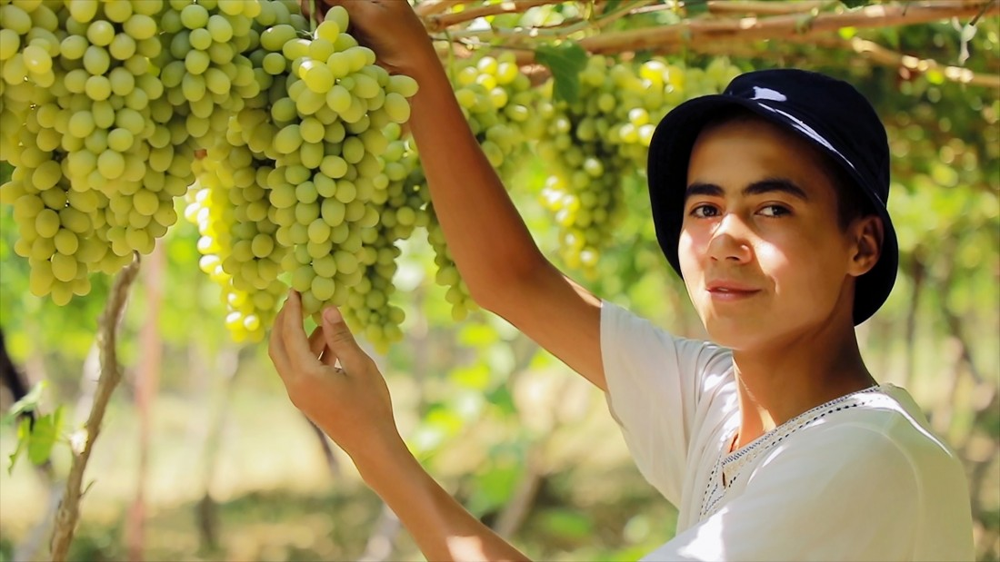

Гулистан - Цветущий город

Климат
Континентальный климат свойственен здесь, как и во всех регионах страны. 247 дней здесь светит солнце, мягкие зимы и длительное лето благоприятно воздействует на сельское хозяйство. Портят погоду в регионе неприятные ветра суховеи, осушающие здешние земли, но эти дни длятся недолго. Долгое время этот край находился в безжизненном состоянии из-за нехватки водных ресурсов, но благодаря строительству в нынешние дни большого количества оросительных сооружений и каналов, регион стал одним из важнейших регионов по выращиванию белого золота – хлопка.
Подарки и сувениры
Рынки и сувенирные лавки – это яркое отражение культуры и быта местного населения. И уезжая из каждого города, мы забираем с собой частичку воспоминаний и впечатлений о нашем путешествии. Сувенирные лавки Гулистана изобилуют различным предметами старины, предметами народно-прикладного искусства. Яркие и красочные ковры, изделия из меди и дерева, изящные панно, вышитые вручную, тюбетейки, яркие – все это станет достойным украшением интерьера Вашего дома.
Кухня
Одним из основных блюд в Сырдарьинском районе считается рыба. Так как район получил свое название от реки Сырдарья, которая богата разными видами рыбы, среди которых можно выделить радужную форель, щуку, белого амура, сазана, а также несколько разновидностей сома. Также в области можно попробовать местный плов и множество разных блюд узбекской кухни.
История
Сырдарьинская область за время своего существования находилась в составе многих древних государств, начиная с империи Ахеминидов, Арабского халифата, государства Саманидов, империи Амира Темура и вплоть до Российской империи и конечно же современного Узбекистана. Административным центром региона является город Гулистан, что в переводе означает «цветочный край».
Сам город можно считать новым, так как он возник вместе с постройкой первого оросительного канала в 1895 году на месте поселения Аччикудук. В это же время в поселок провели первую железную дорогу, что дало большой толчок в его развитии. После открытия канала населенный пункт переименовывается в Мирзачуль.
Также здесь начинают выращивать хлопок и благодаря новому каналу он вскоре становится главным центром по выращиванию «белого золота» во всем регионе. К 1961 году Гулистан стал полноправным городским поселением. Во времена СССР город не сильно отличался от сотен подобных городов и только после приобретения независимости стал приобретать собственное лицо. Сейчас в городе нет древних памятников архитектуры, но современные постройки привлекают тем, что при строительстве были использованы черты древних городов Узбекистана. Среди интересных мест можно отметить Дом природы, Парк Культуры, и Библиотека.